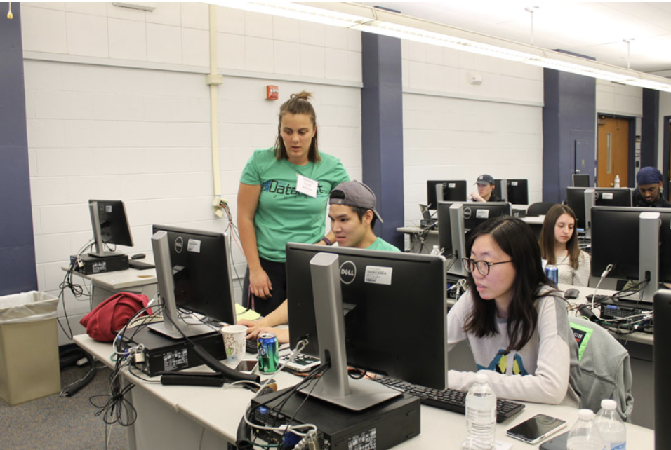

Data-Driven Exploration of Interconnected Risks in Complex Human–Natural Systems
Risk identification & quantification in complex human-natural systems via convergent data intensive research.
Conference Proceedings DOI: 10.1145/3447548.3469480
2020-2021
University of Missouri, Statistics Dept., Columbia, MO
2017-2020
Working with Data

University of Missouri, Statistics Dept., Columbia, MO
2015-2017
Introductory Statistical Reasoning (STAT 1200)
Introduction to Probability and Statistics I (STAT 2500)
Introduction to Probability and Statistics II (STAT 3500)
Colorado State University, Biology Dept., Fort Collins, CO.
2011